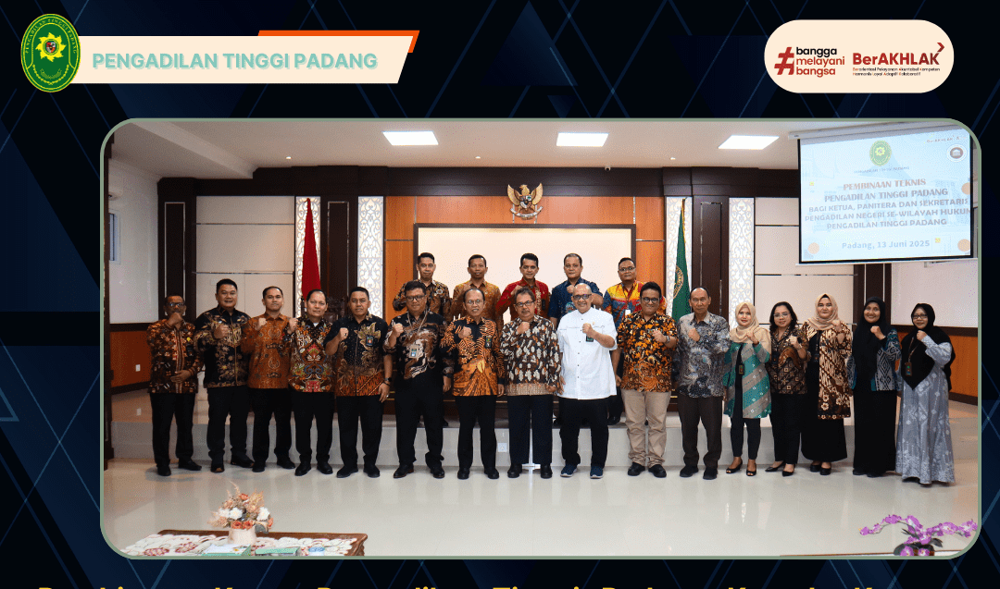

13 Juni 2025
Pembinaan Ketua Pengadilan Tinggi Padang Kepada Ketua, Panitera dan Sekretaris Pengadilan Negeri Se-Wilayah Hukum Pengadilan Tinggi Padang.
Bertempat di Ruang Sidang Utama Lantai II Pengadilan Tinggi Padang, telah dilaksanakan Pembinaan Ketua Pengadilan Tinggi Padang Kepada Ketua, Panitera dan Sekretaris Pengadilan Negeri Se-Wilayah Hukum Pengadilan Tinggi Padang.
Baca Selengkapnya